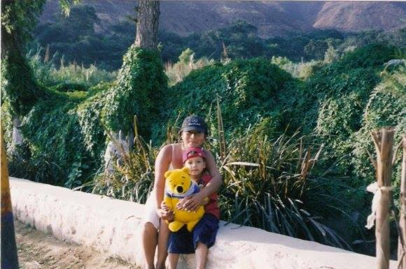
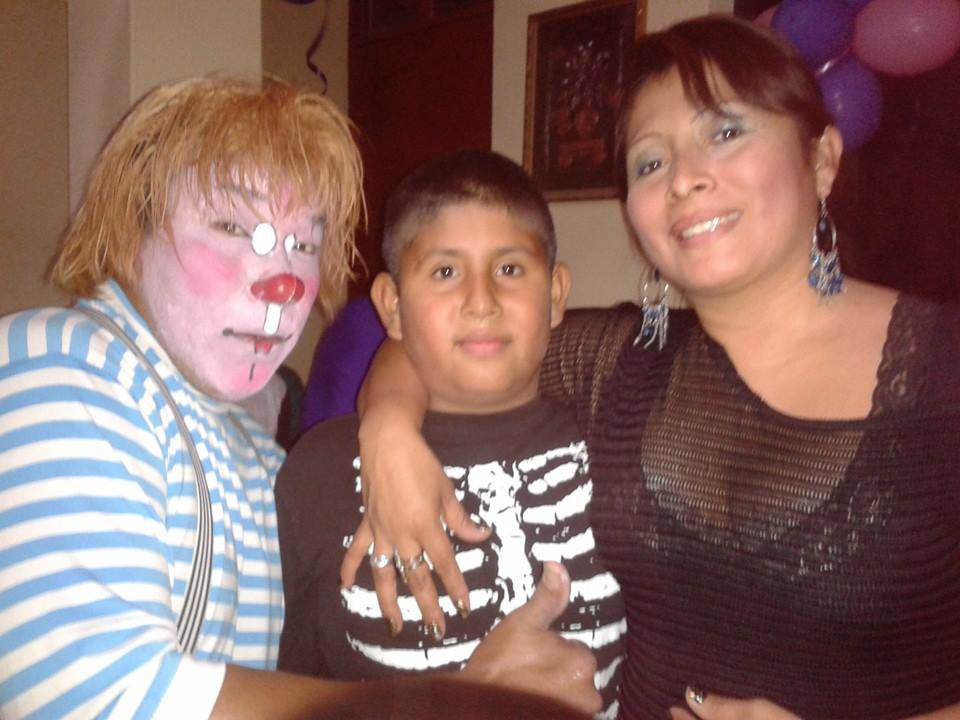
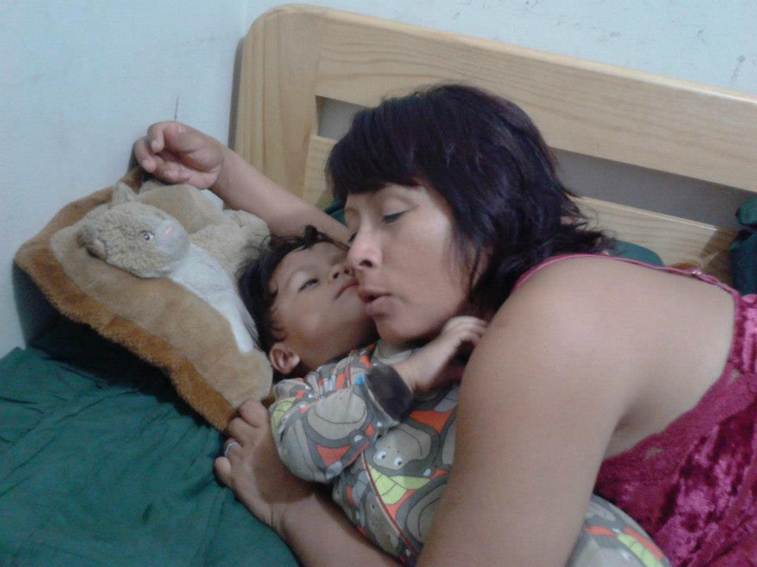
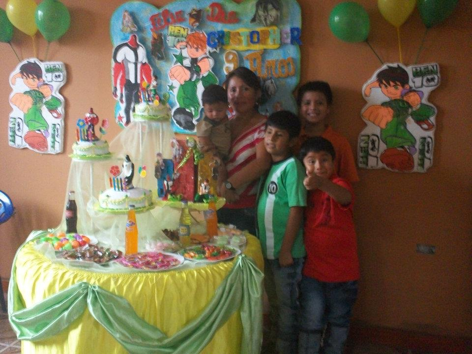
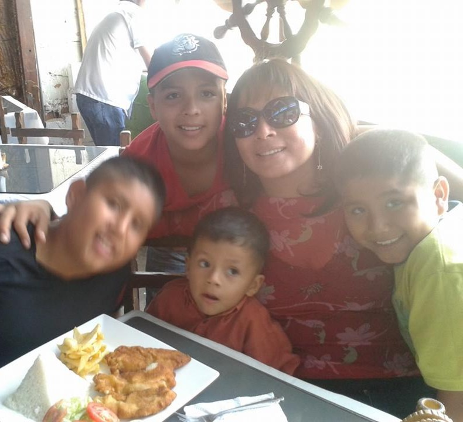
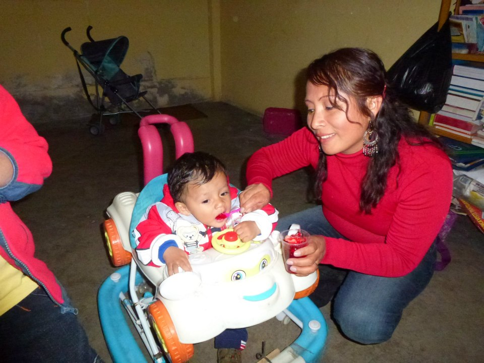
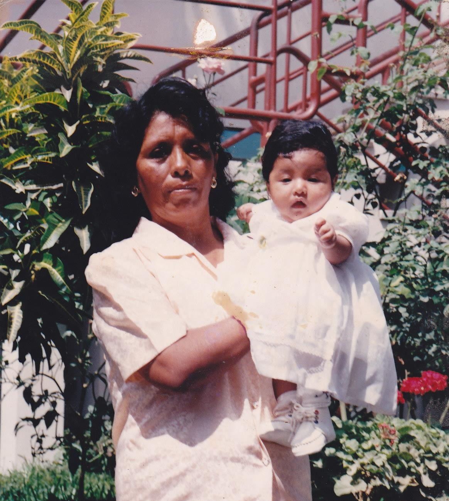
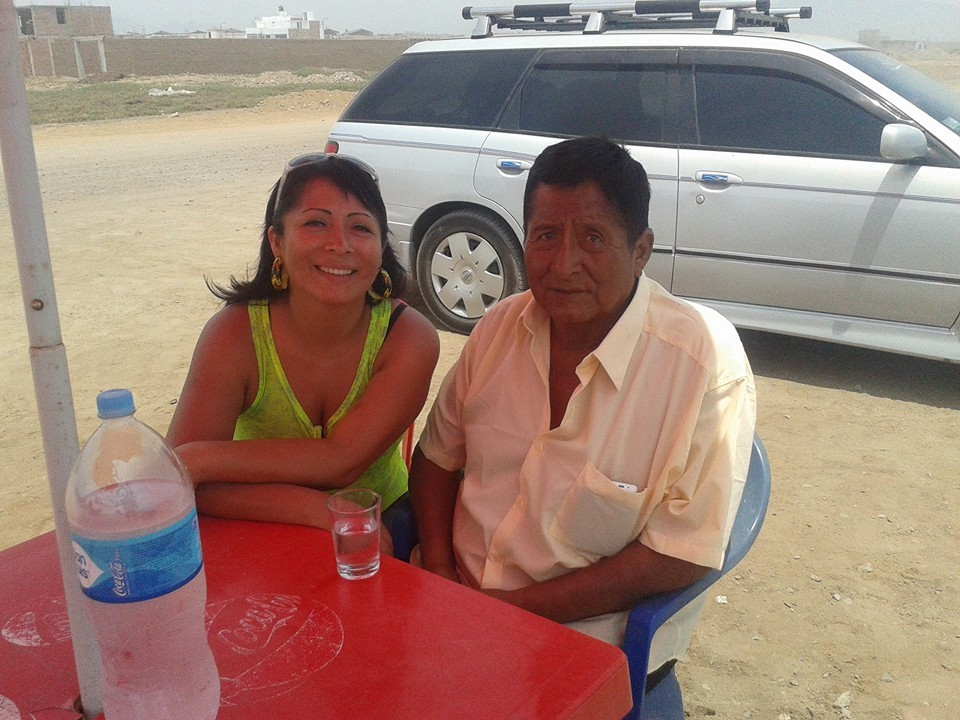

Feliz Día, Chelvi
Con todo mi amor para ti
¡Chelvi eres la mejor mamá!

Toca para ver más

Toca para ver más

Toca para ver más

Toca para ver más

Toca para ver más

Toca para ver más
¡Ellos también están orgullosos de ti!

Toca para ver más

Toca para ver más
Para Ti
Como girasoles que buscan la luz,
Así mi corazón te busca a ti.
Por ser la madre que nunca se rinde,
Por tu amor constante y sin fin.
Gracias Chelvi, por ser mi sol,
Mi guía, mi apoyo y mi inspiración.
Hoy y siempre, celebro tu ser,
Y te entrego todo mi corazón.